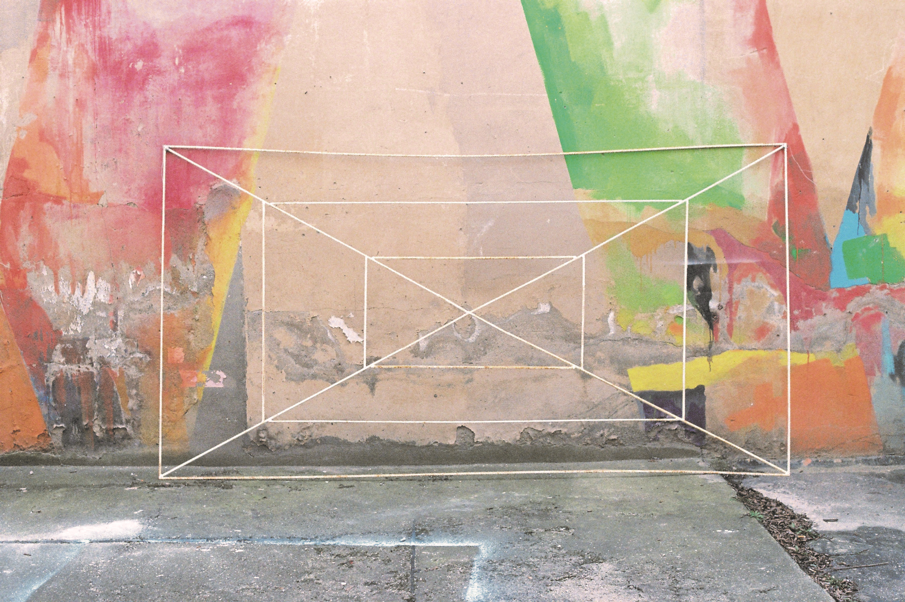
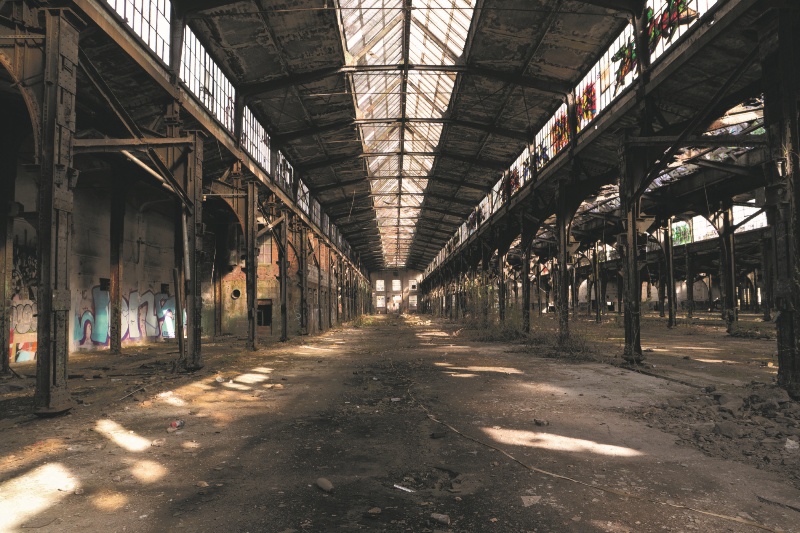
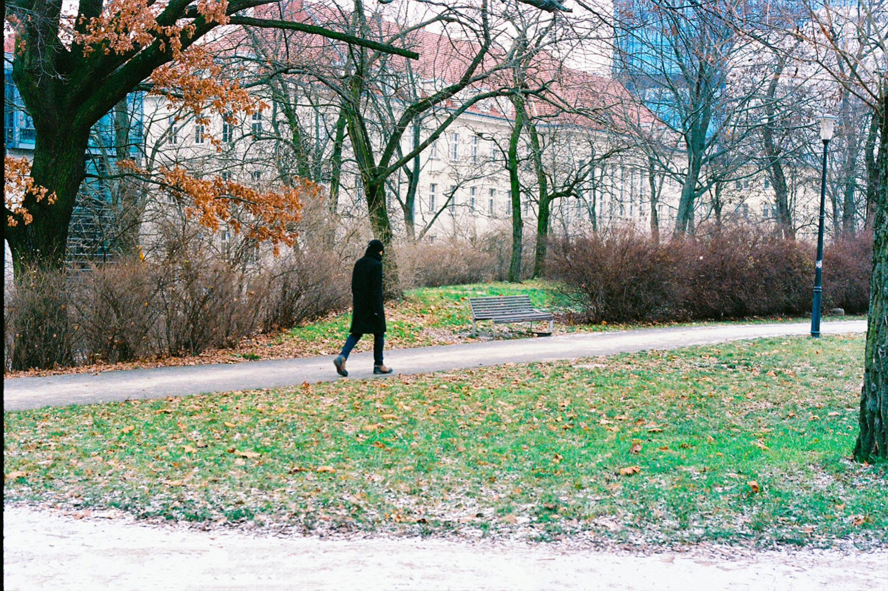
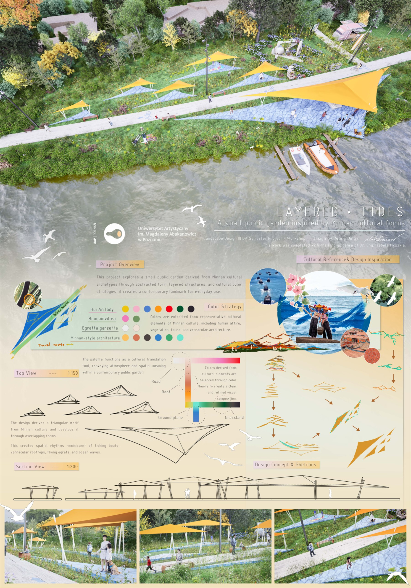
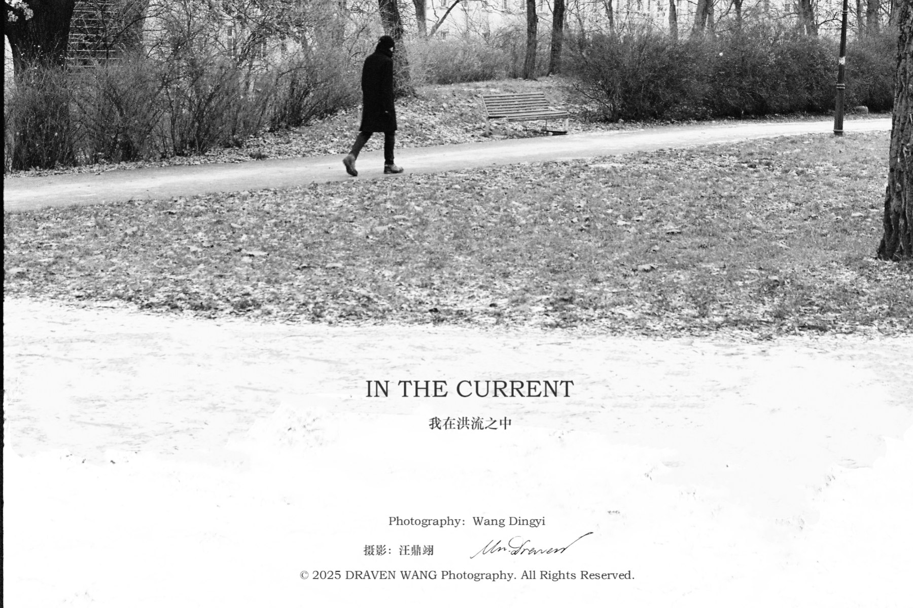
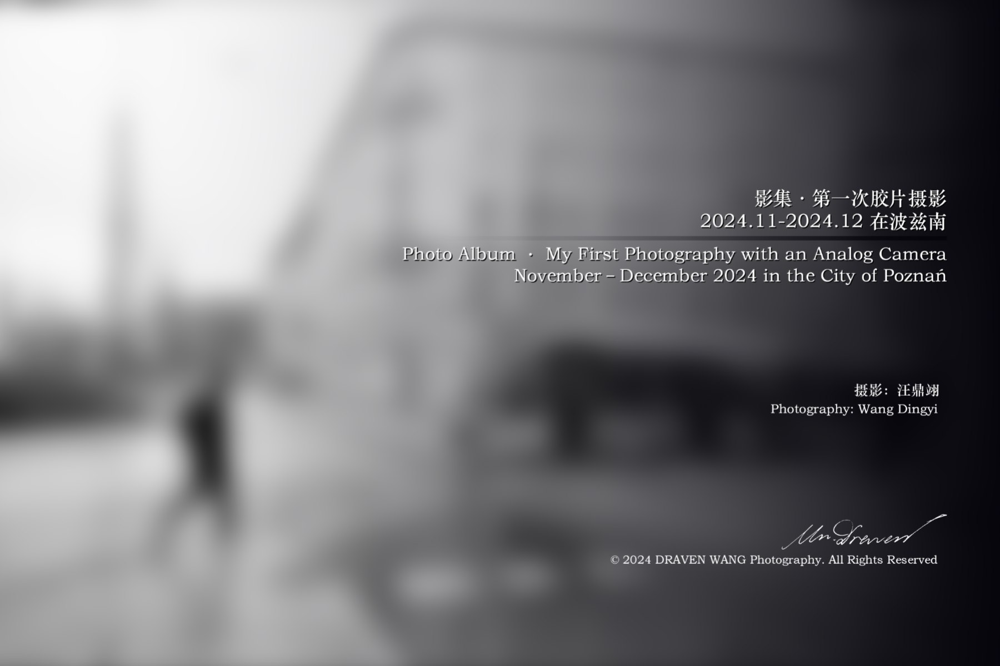
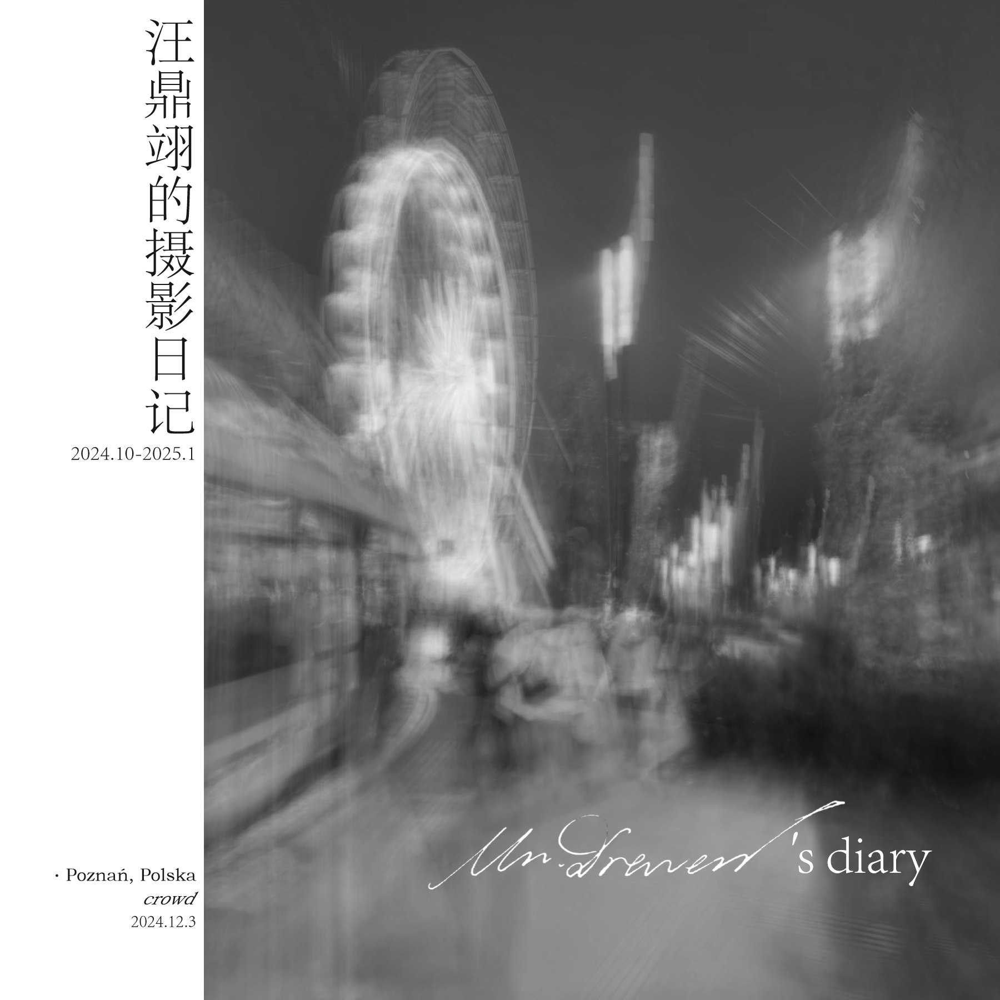
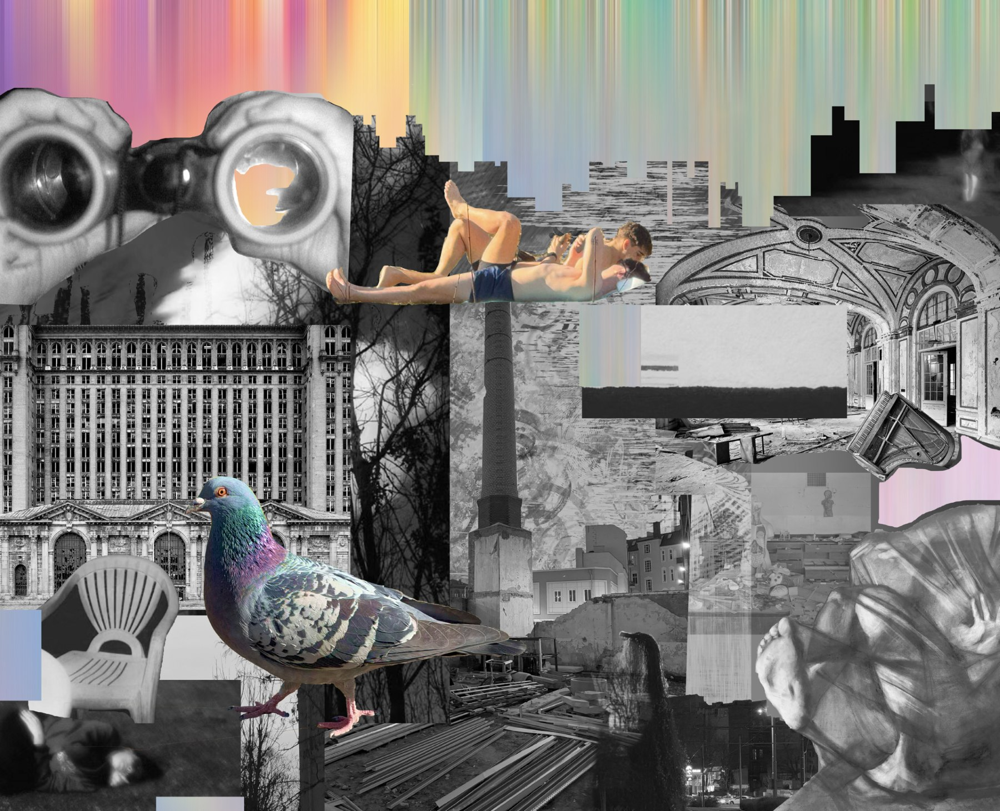
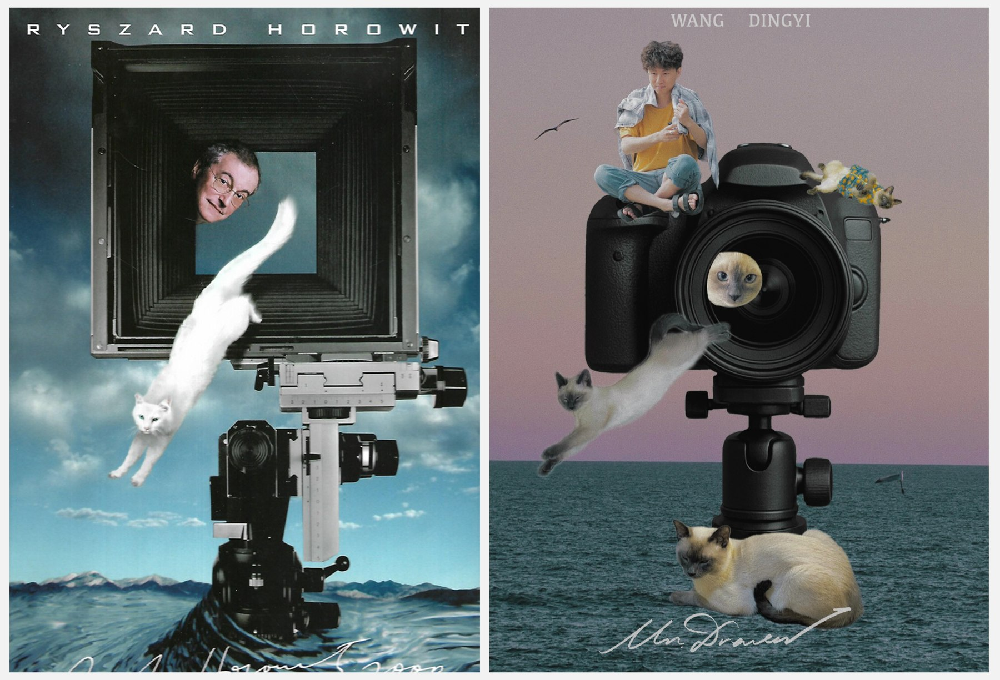

01 — PHOTOGRAPHY
Traces
of Silence.
An Aesthetic Journey
through Everyday Places
墙面、庭院与旧物。
日常场所里，时间留下的痕迹。


汪鼎翊 / Draven
A CLOSER LOOK
Photography · Spatial design
01 — PHOTOGRAPHY
An Aesthetic Journey
through Everyday Places
墙面、庭院与旧物。
日常场所里，时间留下的痕迹。


SPATIAL STUDY 001 / 7—024
A place between times.
从一张摄影，走进一座空间。
沿着钢架、天光与时间留下的痕迹，自由观察。
02 — PHOTOGRAPHY

SPATIAL STUDY 002 / 3—012
A passing moment.
青绿的草地，褐色的落叶。
一个经过的人，和空气里缓慢漂浮的光。
03 — SPATIAL DESIGN
Bridging the Urban Divide.
Regeneration of Wolne Tory in Poznań.

Landscape design · 阶段方案
THE COMPLETE COLLECTION
8 collections.
摄影、空间设计与视觉研究。
停留片刻，预览作品；点击查看完整系列。
Photography
An Aesthetic Journey through Everyday Places

Landscape design
A small public garden inspired by Minnan cultural forms

Photography
Photography · Poznań
Urban regeneration
Bridging the Urban Divide

Analog photography
My first photography with an analog camera

Photo diary
Photography & everyday life

Visual research
Images, fragments, connections

Image study
Reference & response
ABOUT
Wang Dingyi / Draven
我的学习与创作围绕城市更新、公共艺术和摄影展开。通过摄影记录日常，通过设计思考人与环境的关系。
这里收录摄影系列、空间设计与视觉研究，也保留探索过程中的片段。
GET IN TOUCH